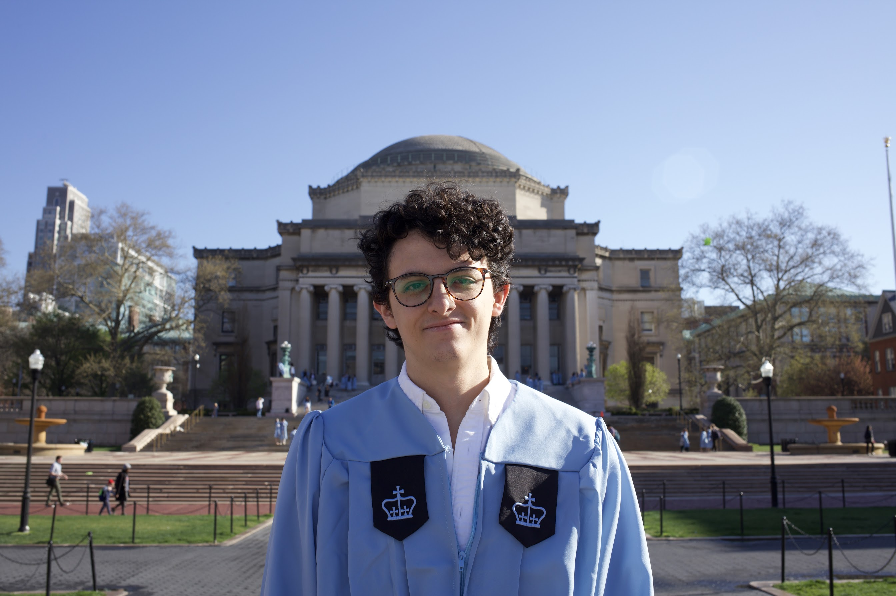
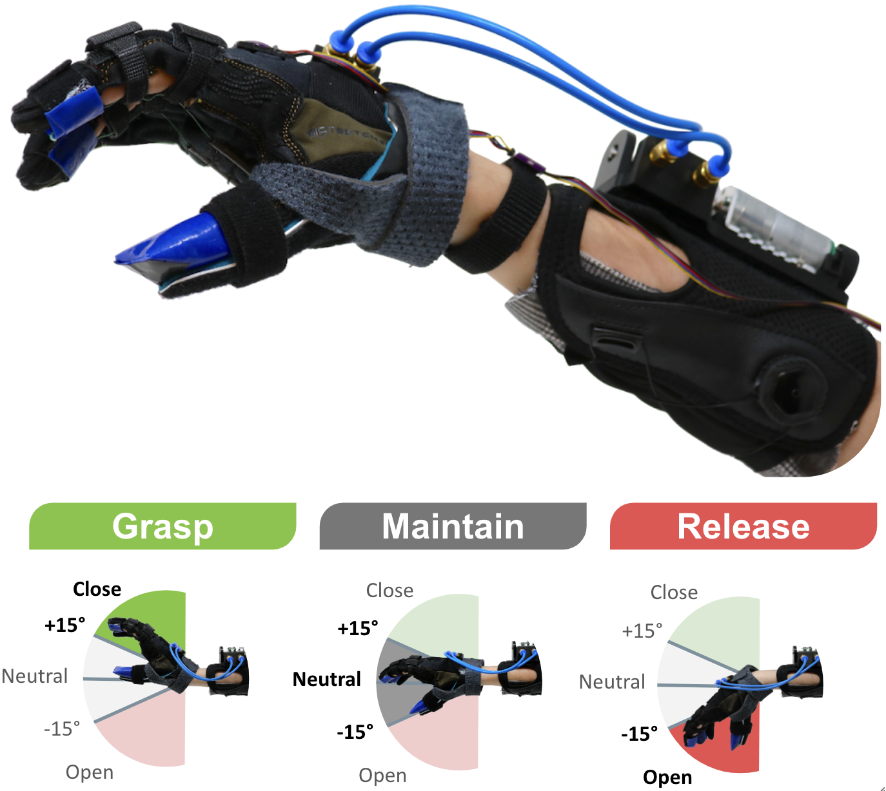
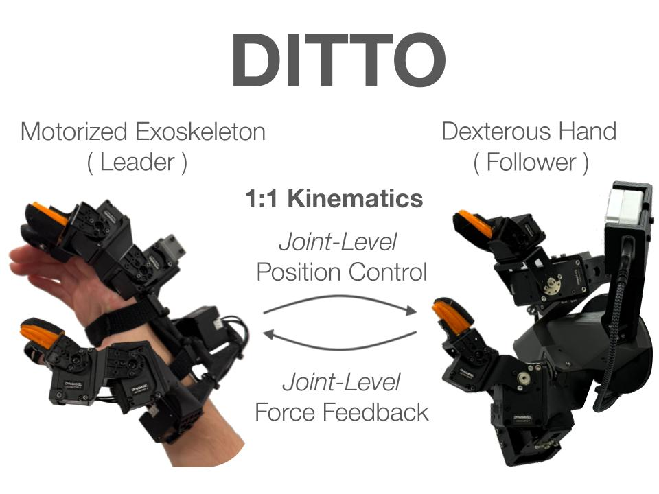
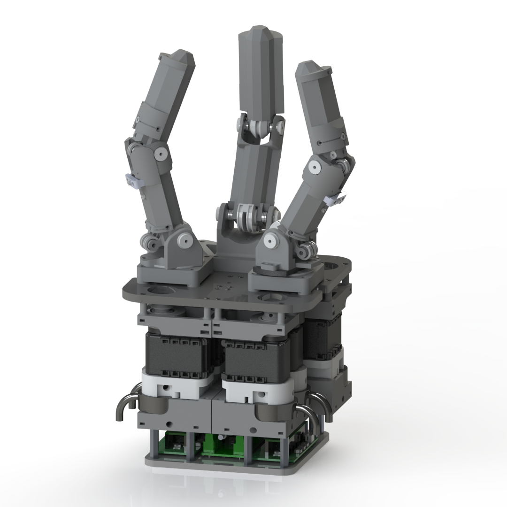
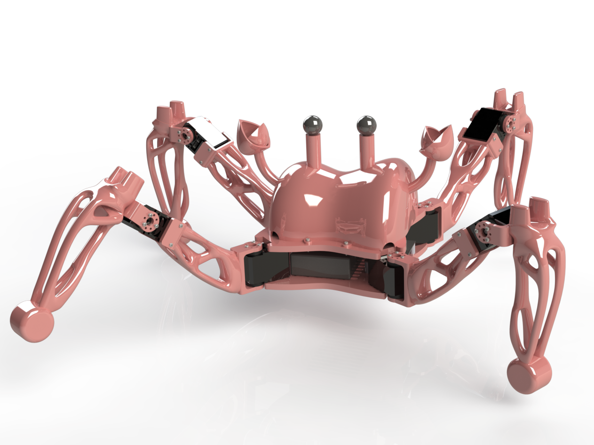
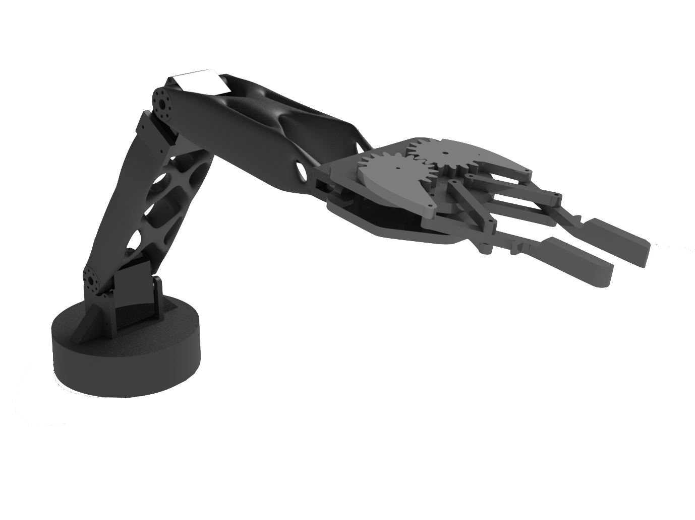

Robotics · Columbia University · ROAM Lab
Joaquin Palacios
Hi there! I'm Joaquin, a Robotics Engineer from Quito, Ecuador.
I'm currently a PhD candidate in Mechanical Engineering at Columbia University. I work at the ROAM Lab, advised by Matei Ciocarlie.
I am passionate about the full stack of robotics: mechanical design, electronics, controls, and robot learning. My research interests are in autonomous robotic manipulation and medical assistive robotics.

Highlights
Featured work in dexterous manipulation, assistive robotics, and agricultural robotics.
DITTO
Co-designed dexterous hand and kinematically equivalent motorized exoskeleton for both handheld data collection and bilateral teleoperation with joint-level force feedback.
Visit project site →
ROAM Hand 3
Robot hand with 6-axis F/T sensorized fingertips and novel kinematics validated via RL policies.
View project →
MyHand SCI
Wearable robot to assist grasping for individuals with Spinal Cord Injuries.
View project →
Plan Bee
Robotic crop pollination for Vertical Farming.
View project →All Projects
Selected research and projects across dexterous manipulation, assistive robotics, and mechatronics.

DITTO
Co-designed dexterous hand and kinematically equivalent motorized exoskeleton for both handheld data collection and bilateral teleoperation with joint-level force feedback.
ROAM Hand 3
Robot hand with 6-axis F/T sensorized fingertips and novel kinematics validated via RL policies.
Plan Bee
Robotic crop pollination for Vertical Farming.
MyHand SCI
Wearable robot to assist grasping for individuals with Spinal Cord Injuries.

ROAM Hand 1
Developing a robot hand to explore proprioception in dexterous manipulation.

Crab.io
A quadruped robot known for being cute and fast!

Button-Pressing Machine
An exploration of mechatronics, machine design, controls, and machining.

Digital Manufacturing
A collection of projects exploring generative design, topology optimization, additive manufacturing, and more.

Applied Robotics
Projects in applied robotics, leveraging ROS 2 to implement (from scratch) cartesian control, inverse kinematics, path planning (using RRT algorithm), and more.
Robots used: UR5e, Franka Emika.